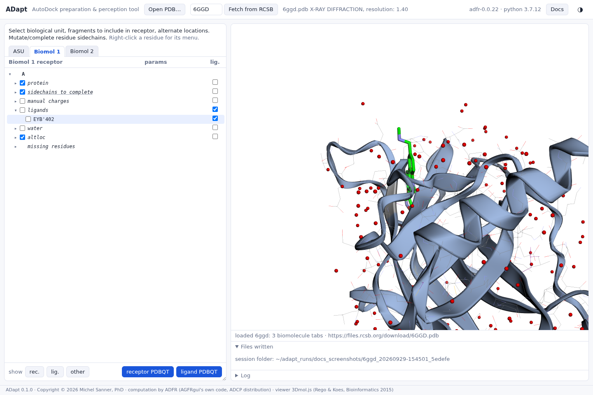

Ligands and other hetero groups
6GGD: take the bound ligand out of the receptor, and write it as a ligand file of its own.
Hetero groups are sorted into cofactors, ligands, additives, manual charges, water and other. The defaults follow the usual practice: cofactors stay in the receptor, and a docked molecule may interact with them. Ligands, additives, waters and ions are left out. You can override any of these choices.
Receptor, ligand, or neither
Every residue has two checkboxes: the first puts it in the receptor, the one in the lig. column in the ligand. The two exclude each other, so checking one unchecks the other, and a residue with neither is left out of both files. A category's checkboxes apply to all of its residues, and show partly checked when its residues differ.

The show rec., lig. and other buttons highlight what the current choices put in the receptor, in the ligand, and in neither. This is a quick way to confirm that nothing near the pocket was left out by mistake. A button is disabled when its selection is empty.
The ligand file
ligand PDBQT writes the ligand atoms of the current tab. Each connected fragment becomes
one ligand: one file (6ggd_lig.pdbqt), or one numbered file per fragment
(6ggd_lig_001.pdbqt, …) downloaded together as a zip. Hydrogens are added and
charges assigned with Open Babel, and a torsion tree is built for docking. See
Writing the PDBQT files.
Keeping a hetero group in the receptor
A cofactor, metal or structural water that the ligand may interact with belongs in the receptor: check its first box. Additives such as glycerol or sulfate usually do not, unless one sits in the pocket in a way you want to keep.
6ggd.pdb). Hetero groups the table does not know land in other, where they
can be checked just the same.